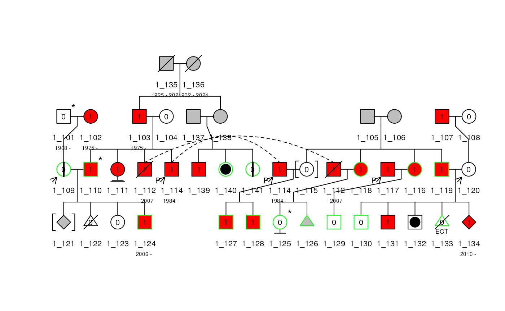
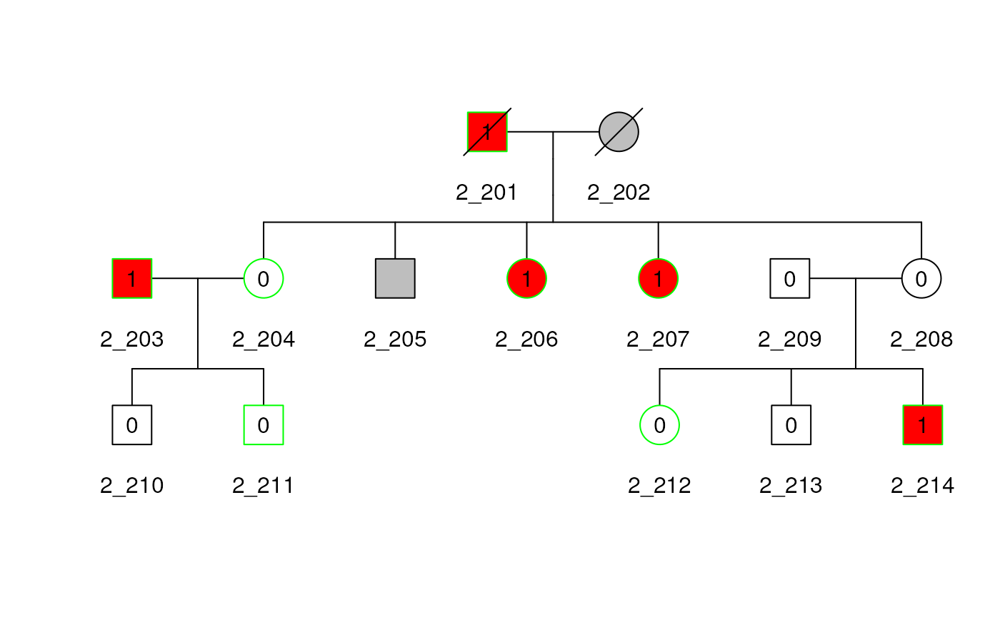
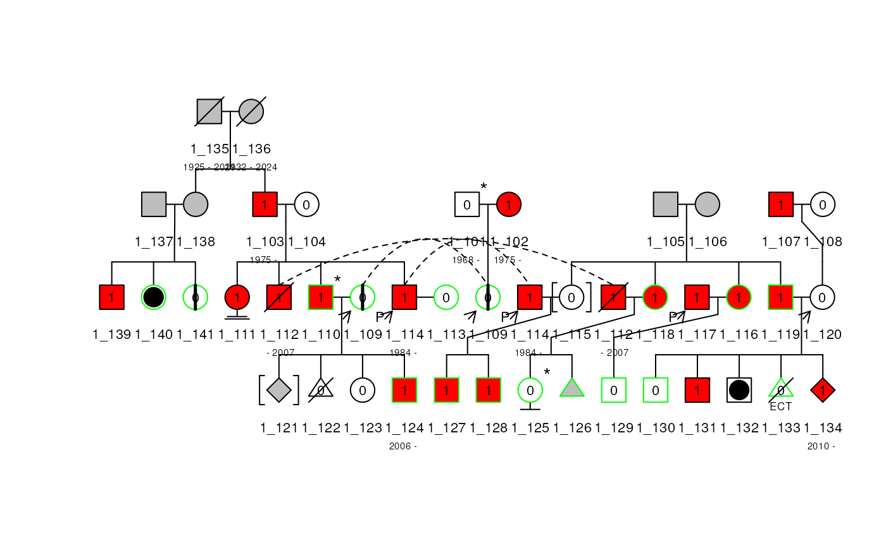
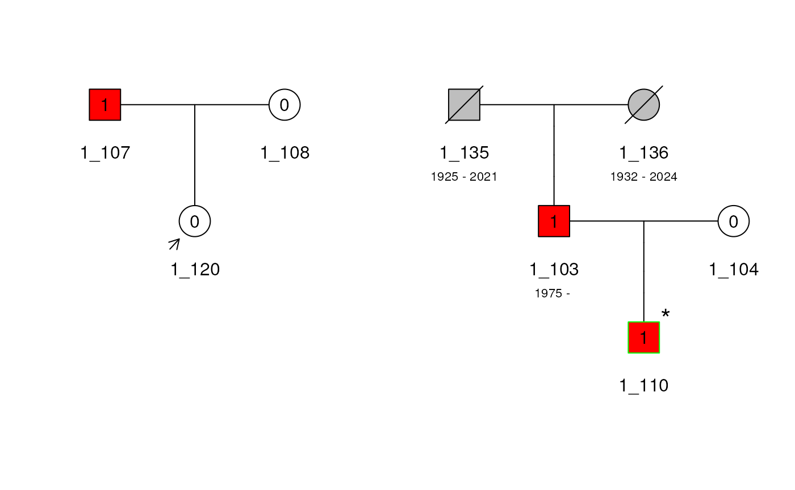

Introduction
This document is a tutorial for the Pedixplorer package,
with examples of creating Pedigree objects and kinship
matrices and other pedigree utilities.
The Pedixplorer package is an updated version of the Kinship2
package, featuring a change in maintainer and repository from CRAN to
Bioconductor for continued development and support.
It contains the routines to handle family data with a
Pedigree object. The initial purpose was to create
correlation structures that describe family relationships such as
kinship and identity-by-descent, which can be used to model family data
in mixed effects models, such as in the coxme function. It
also includes tools for pedigree drawing and filtering which is focused
on producing compact layouts without intervention. Recent additions
include utilities to trim the Pedigree object with various
criteria, and kinship for the X chromosome.
Supplementary vignettes are available to explain:
- The
Pedigreeobjectvignette("pedigree_object", package = "Pedixplorer") - The alignment algorithm used to create the pedigree
structure
vignette("pedigree_alignment", package = "Pedixplorer") - The kinship algorithm
vignette("pedigree_kinship", package = "Pedixplorer") - The plotting algorithm used to plot the pedigree
vignette("pedigree_plot", package = "Pedixplorer")
Installation
The Pedixplorer package is available on Bioconductor
and can be installed with the following command:
if (!requireNamespace("BiocManager", quietly = TRUE)) {
install.packages("BiocManager")
}
BiocManager::install("Pedixplorer")The package can then be loaded with the following command:
## Loading required package: ggplot2##
## Attaching package: 'plotly'## The following object is masked from 'package:ggplot2':
##
## last_plot## The following object is masked from 'package:stats':
##
## filter## The following object is masked from 'package:graphics':
##
## layout##
## Attaching package: 'dplyr'## The following objects are masked from 'package:stats':
##
## filter, lag## The following objects are masked from 'package:base':
##
## intersect, setdiff, setequal, union##
## Attaching package: 'Pedixplorer'## The following object is masked from 'package:dplyr':
##
## id## The following object is masked from 'package:ggplot2':
##
## relThe Pedigree S4 object
The Pedigree object is a list of dataframes that
describe the family structure. It contains the following components:
- ped: a
Pedobject with the pedigree informationhelp(Ped). - rel: a
Relobject with the relationship informationhelp(Rel). - scales: a
Scalesobject of 2 dataframe with the filling and borders informations for the plothelp(Scales). - hints: a
Hintsobjects with 2 slots indicating the horder and the spouse to organise the pedigree structurehelp(Hints).
Basic Usage
Example Data
Two datasets are provided within the Pedixplorer
package: + minnbreast: 17 families from a breast cancer
study + sampleped: two sample pedigrees, with 41 and 14
subjects and the special relationship of these two pedigrees in
relped.
This vignette uses the two pedigrees in sampleped. For
more information on these datasets, see help(minnbreast)
and help(sampleped).
Pedigree
First, we load sampleped and look at some of the values
in the dataset, and create a Pedigree object using the
Pedigree() function. This function automaticaly detect the
necessary columns in the dataframe. If necessary you can modify the
columns names with cols_ren. To create a Pedigree
object, with multiple families, the dataframe just need a family column
in the ped_df dataframe. When this is the case, the famid
column will be pasted to the id of each individuals separated by an
underscore to create a unique id for each individual in the
Pedigree object.
## famid id dadid momid sex affection avail num fertility miscarriage evaluated consultand proband
## 1 1 101 <NA> <NA> 1 0 0 2 1 NA
## 2 1 102 <NA> <NA> 2 1 0 3 NA
## 3 1 103 135 136 1 1 0 2 NA
## 4 1 104 <NA> <NA> 2 0 0 4 NA
## 5 1 105 <NA> <NA> 1 NA 0 6 NA
## 6 1 106 <NA> <NA> 2 NA 0 1 NA
## 7 1 107 <NA> <NA> 1 1 0 NA NA
## 8 1 108 <NA> <NA> 2 0 0 0 NA
## 9 1 109 101 102 2 0 1 3 1
## 10 1 110 103 104 1 1 1 2 true NA
## carrier asymptomatic adopted dateofbirth dateofdeath deceased
## 1 NA NA NA 1968-01-22 NA
## 2 NA NA NA 1975-06-27 NA
## 3 NA NA NA 1975-08-14 NA
## 4 NA NA NA NA
## 5 NA NA NA NA
## 6 NA NA NA NA
## 7 NA NA NA NA
## 8 NA NA NA NA
## 9 NA 1 NA NA
## 10 NA NA NA NA## Pedigree object with:
## Ped object with 5 individuals and 5 metadata columns:
## id dadid momid famid sex fertility miscarriage deceased
## col_class <character> <character> <character> <character> <ordered> <factor> <factor> <logical>
## 1_103 1_103 1_135 1_136 1 male fertile FALSE <NA>
## 1_104 1_104 <NA> <NA> 1 female fertile FALSE <NA>
## 1_110 1_110 1_103 1_104 1 male fertile FALSE <NA>
## 1_135 1_135 <NA> <NA> 1 male fertile FALSE TRUE
## 1_136 1_136 <NA> <NA> 1 female fertile FALSE TRUE
## avail evaluated consultand proband affected carrier asymptomatic adopted
## col_class <logical> <logical> <logical> <logical> <logical> <logical> <logical> <logical>
## 1_103 FALSE FALSE FALSE FALSE TRUE <NA> <NA> FALSE
## 1_104 FALSE FALSE FALSE FALSE FALSE <NA> <NA> FALSE
## 1_110 TRUE TRUE FALSE FALSE TRUE <NA> <NA> FALSE
## 1_135 FALSE FALSE FALSE FALSE <NA> <NA> <NA> FALSE
## 1_136 FALSE FALSE FALSE FALSE <NA> <NA> <NA> FALSE
## dateofbirth dateofdeath useful kin isinf num_child_tot num_child_dir
## col_class <character> <character> <logical> <numeric> <logical> <numeric> <numeric>
## 1_103 1975-08-14 <NA> <NA> <NA> <NA> 1 1
## 1_104 <NA> <NA> <NA> <NA> <NA> 1 1
## 1_110 <NA> <NA> <NA> <NA> <NA> 0 0
## 1_135 1925-05-04 2021-01-22 <NA> <NA> <NA> 1 1
## 1_136 1932-07-19 2024-02-17 <NA> <NA> <NA> 1 1
## num_child_ind | affection num error affection_mods avail_mods
## col_class <numeric> <character> <character> <character> <character> <character>
## 1_103 0 1 2 <NA> 1 0
## 1_104 0 0 4 <NA> 0 0
## 1_110 0 1 2 <NA> 1 1
## 1_135 0 <NA> 5 <NA> NA 0
## 1_136 0 <NA> 6 <NA> NA 0
## Rel object with 0 relationshipswith 0 MZ twin, 0 DZ twin, 0 UZ twin, 0 Spouse:
## id1 id2 code famid
## <character> <character> <c("ordered", "factor")> <character>For more information on the Pedigree() function, see
help(Pedigree).
The Pedigree object can be subset to individual
pedigrees by their family id. The Pedigree object has a
print, summary and plot method, which we show below. The print method
prints the Ped and Rel object of the pedigree.
The summary method prints a short summary of the pedigree. Finally the
plot method displays the pedigree.
## [1] "1" "1" "1" "1" "1" "1" "1" "1" "1" "1" "1" "1" "1" "1" "1" "1" "1" "1" "1" "1" "1" "1" "1" "1"
## [25] "1" "1" "1" "1" "1" "1" "1" "1" "1" "1" "1" "1" "1" "1" "1" "1" "1" "2" "2" "2" "2" "2" "2" "2"
## [49] "2" "2" "2" "2" "2" "2" "2"## Pedigree object with
## [1] "Ped object with 41 individuals and 5 metadata columns"
## [1] "Rel object with 0 relationshipswith 0 MZ twin, 0 DZ twin, 0 UZ twin, 0 Spouse"
plot(ped1, cex = 0.7)
You can add a title and a legend to the plot with the following command:
plot(
ped1, title = "Pedigree 1",
legend = TRUE, leg_loc = c(0.45, 0.9, 0.8, 1),
cex = 0.7, leg_symbolsize = 0.04
)
Pedigree Shiny application
A shiny application is available to create, interact and plot pedigrees. To launch the application, use the following command:
The use is simple:
- You first need to import a dataset and select the columns to use.
- You can then select the affection informations and the colors associated to them.
- If different families are present in the dataset, you can select which one to plot.
- Before the plot is displayed, you can filter the pedigree by selecting the informatives subjects to keep and their relatives. If the pedigree is then splited in multiple families, you can select which to plot.
- Finally the plot is displayed and you can make it interactive and download the resulting image.
Fixing Pedigree Issues
To “break” the pedigree, we can manipulate the sex value to not match
the parent value (in this example, we change 203 from a male to
a female, even though 203 is a father). To do this, we first
subset datped2, locate the id column, and match it
to a specific id (in this case, 203). Within id 203,
then locate in the sex column. Assign this subset to the
incorrect value of 2 (female) to change the
original/correct value of 1 (male).
To further break the pedigree, we can delete subjects who seem
irrelevant to the pedigree (in this example, we delete 209
because he is a married-in father). To do this, we subset
datped2 and use the which() function to locate and
delete the specified subject (in this case, 209). Reassign this
code to datped22 to drop the specified subject entirely.
datped2 <- sampleped[sampleped$famid == 2, ]
datped2[datped2$id %in% 203, "sex"] <- 2
datped2 <- datped2[-which(datped2$id %in% 209), ]An error occurs when the Pedigree() function notices
that id 203 is not coded to be male (1) but is a
father. To correct this, we simply employ the fix_parents()
function to adjust the sex value to match either
momid or dadid. fix_parents()
will also add back in any deleted subjects, further fixing the
Pedigree.
## Error in validObject(.Object) :
## invalid class "Ped" object: dadid values '2_209' should be in '2_201', '2_202', '2_203', '2_204', '2_205'...
fixped2 <- with(datped2, fix_parents(id, dadid, momid, sex))
fixped2## id momid dadid sex famid
## 1 201 <NA> <NA> male 1
## 2 202 <NA> <NA> female 1
## 3 203 <NA> <NA> male 1
## 4 204 202 201 female 1
## 5 205 202 201 male 1
## 6 206 202 201 female 1
## 7 207 202 201 female 1
## 8 208 202 201 female 1
## 9 210 204 203 male 1
## 10 211 204 203 male 1
## 11 212 208 209 female 1
## 12 213 208 209 male 1
## 13 214 208 209 male 1
## 14 209 <NA> <NA> male 1If the fix is straightforward (changing one sex value based on either
being a mother or father), fix_parents() will resolve the
issue. If the issue is more complicated, say if 203 is coded to
be both a father and a mother, fix_parents() will not know
which one is correct and therefore the issue will not be resolved.
Kinship
A common use for pedigrees is to make a matrix of kinship coefficients that can be used in mixed effect models. A kinship coefficient is the probability that a randomly selected allele from two people at a given locus will be identical by descent (IBD), assuming all founder alleles are independent. For example, we each have two alleles per autosomal marker, so sampling two alleles with replacement from our own DNA has only \(p=0.50\) probability of getting the same allele twice.
Kinship for Pedigree object
We use kinship() to calculate the kinship matrix for
ped2. The result is a special symmetrix matrix class from the
Matrix R
package, which is stored efficiently to avoid repeating
elements.
kin2 <- kinship(ped2)
kin2[1:9, 1:9]## 9 x 9 sparse Matrix of class "dsCMatrix"
## 1_201 1_202 1_203 1_204 1_205 1_206 1_207 1_208 1_209
## 1_201 0.50 . . 0.25 0.25 0.25 0.25 0.25 .
## 1_202 . 0.50 . 0.25 0.25 0.25 0.25 0.25 .
## 1_203 . . 0.5 . . . . . .
## 1_204 0.25 0.25 . 0.50 0.25 0.25 0.25 0.25 .
## 1_205 0.25 0.25 . 0.25 0.50 0.25 0.25 0.25 .
## 1_206 0.25 0.25 . 0.25 0.25 0.50 0.25 0.25 .
## 1_207 0.25 0.25 . 0.25 0.25 0.25 0.50 0.25 .
## 1_208 0.25 0.25 . 0.25 0.25 0.25 0.25 0.50 .
## 1_209 . . . . . . . . 0.5For family 2, see that the row and column names match the id in the figure below, and see that each kinship coefficient with themselves is 0.50, siblings are 0.25 (e.g. 204-205), and pedigree marry-ins only share alleles IBD with their children with coefficient 0.25 (e.g. 203-210). The plot can be used to verify other kinship coefficients.
Kinship for Pedigree with multiple families
The kinship() function also works on a
Pedigree object with multiple families. We show how to
create the kinship matrix, then show a snapshot of them for the two
families, where the row and columns names are the ids of the
subject.
pedi <- Pedigree(sampleped)
adopted(ped(pedi)) <- FALSE # Remove adoption status
kin_all <- kinship(pedi)
kin_all[1:9, 1:9]## 9 x 9 sparse Matrix of class "dsCMatrix"
## 1_101 1_102 1_103 1_104 1_105 1_106 1_107 1_108 1_109
## 1_101 0.50 . . . . . . . 0.25
## 1_102 . 0.50 . . . . . . 0.25
## 1_103 . . 0.5 . . . . . .
## 1_104 . . . 0.5 . . . . .
## 1_105 . . . . 0.5 . . . .
## 1_106 . . . . . 0.5 . . .
## 1_107 . . . . . . 0.5 . .
## 1_108 . . . . . . . 0.5 .
## 1_109 0.25 0.25 . . . . . . 0.50
kin_all[40:43, 40:43]## 4 x 4 sparse Matrix of class "dsCMatrix"
## 1_140 1_141 2_201 2_202
## 1_140 0.50 0.25 . .
## 1_141 0.25 0.50 . .
## 2_201 . . 0.5 .
## 2_202 . . . 0.5
kin_all[42:46, 42:46]## 5 x 5 sparse Matrix of class "dsCMatrix"
## 2_201 2_202 2_203 2_204 2_205
## 2_201 0.50 . . 0.25 0.25
## 2_202 . 0.50 . 0.25 0.25
## 2_203 . . 0.5 . .
## 2_204 0.25 0.25 . 0.50 0.25
## 2_205 0.25 0.25 . 0.25 0.50Kinship for twins in Pedigree with multiple families
Specifying twin relationships in a Pedigree with multiple families
object is complicated by the fact that the user must specify the family
id to which the id1 and id2 belong. We show
below the relation matrix requires the family id to be in the last
column, with the column names as done below, to make the plotting and
kinship matrices to show up with the monozygotic twins correctly. We
show how to specify monozygosity for subjects 206 and
207 in ped2, and subjects 125 and
126 in ped1. We check it by looking at the kinship
matrix for these pairs, which are correctly at 0.5.
data("relped")
relped## famid id1 id2 code
## 1 1 140 141 1
## 2 1 139 140 2
## 3 1 121 123 2
## 4 1 129 126 4
## 5 1 130 133 3
## 6 2 210 211 1
## 7 2 208 204 2
## 8 2 212 213 3
pedi <- Pedigree(sampleped, relped)
adopted(ped(pedi)) <- FALSE # Remove adoption status
kin_all <- kinship(pedi)
kin_all[24:27, 24:27]## 4 x 4 sparse Matrix of class "dsCMatrix"
## 1_124 1_125 1_126 1_127
## 1_124 0.5000 0.0625 0.0625 0.0625
## 1_125 0.0625 0.5000 0.2500 0.1250
## 1_126 0.0625 0.2500 0.5000 0.1250
## 1_127 0.0625 0.1250 0.1250 0.5000
kin_all[46:50, 46:50]## 5 x 5 sparse Matrix of class "dsCMatrix"
## 2_205 2_206 2_207 2_208 2_209
## 2_205 0.50 0.25 0.25 0.25 .
## 2_206 0.25 0.50 0.25 0.25 .
## 2_207 0.25 0.25 0.50 0.25 .
## 2_208 0.25 0.25 0.25 0.50 .
## 2_209 . . . . 0.5Note that subject 113 is not in ped1 because they
are a marry-in without children in the Pedigree. Subject
113 is in their own Pedigree of size 1 in the
kin_all matrix at index 41. We later show how to
handle such marry-ins for plotting.
Optional Pedigree Informations
We use ped2 from sampleped to sequentially add
optional information to the Pedigree object.
Deceased
The example below shows how to specify a deceased
indicator. The sampleped data does not include such
an
indicator, so we create one to indicate that the first generation of
ped2, subjects 1 and 2, are deceased. The
deceased indicator is used to cross out the individuals in
the Pedigree plot.
df2 <- sampleped[sampleped$famid == 2, ]
names(df2)## [1] "famid" "id" "dadid" "momid" "sex" "affection"
## [7] "avail" "num" "fertility" "miscarriage" "evaluated" "consultand"
## [13] "proband" "carrier" "asymptomatic" "adopted" "dateofbirth" "dateofdeath"
## [19] "deceased"## Mode FALSE TRUE
## logical 12 2
plot(ped2)
Labels
Here we show how to use the label argument in the plot
method to add additional information under each subject. In the example
below, we add names to the existing plot by adding a new column to the
elementMetadata of the Ped object of the
Pedigree.
As space permits, more lines and characters per line can be made using the a {/em } character to indicate a new line.
Affected Indicators
We show how to specify affected status with a single indicator and
multiple indicators. First, we use the affected indicator from
sampleped, which contains 0/1 indicators
and NA as missing, and let it it indicate blue eyes. Next, we
create a vector as an indicator for baldness. And add it as a second
filling scale for the plot with
generate_colors(add_to_scale = TRUE). The plot shapes for
each subject is therefore divided into two equal parts and shaded
differently to indicate the two affected indicators.
mcols(ped2)$bald <- as.factor(c(0, 0, 0, 0, 1, 0, 0, 0, 0, 1, 1, 0, 0, 1))
ped2 <- generate_colors(ped2, col_aff = "bald", add_to_scale = TRUE)
# Increase down margin for the legend
op <- par(mai = c(1.5, 0.2, 0.2, 0.2))
plot(
ped2, legend = TRUE,
leg_loc = c(0.5, 6, 3.5, 4)
)
# Reset graphical parameter
par(op)Special Relationships
Special pedigree relationships can be specified in a matrix as the
rel_df argument in the Pedigree() constructor.
There are 4 relationships that can be specified by numeric codes:
-
1= Monozygotic twins -
2= Dizygotic twins -
3= Twins of unknown zygosity -
4= Spouse
The spouse relationship can indicate a marry-in when a couple does not have children together.
Twins
Below, we use the relationship dataset. We can specify in the code
column if the individuals are monozygotic 1, dizygotic
2 or of unknown-zygosity 3 twins. The twin
relationships are both represented with diverging lines from a single
point. The monozygotic twins have an additional line connecting the
diverging lines, while twins of unknown zygosity have a question
mark.
Inbreeding
Another special relationship is inbreeding. Inbreeding of founders implies the founders’ parents are related (the maternal and paternal genes descended from a single ancestral gene). One thing we can do is add more people to the pedigree to show this inbreeding.
To show that a pair of founders (subjects 201 and 202) are inbred, we must show that their parents are siblings. To do this, we create subjects 197 and 198 to be the parents of 201 and also create subjects 199 and 200 to be the parents of 202. To make subjects 198 and 199 siblings, we give them the same parents, creating subjects 195 and 196. This results in subjects 201 and 202 being first cousins, and therefore inbred.
indid <- 195:202
dadid <- c(NA, NA, NA, 196, 196, NA, 197, 199)
momid <- c(NA, NA, NA, 195, 195, NA, 198, 200)
sex <- c(2, 1, 1, 2, 1, 2, 1, 2)
ped3 <- data.frame(
id = indid, dadid = dadid,
momid = momid, sex = sex
)
ped4df <- rbind.data.frame(df2[-c(1, 2), 2:5], ped3)
ped4 <- Pedigree(ped4df)
plot(ped4)Marry-ins
Spouse with no child can also be specified with the
rel_df argument by setting the code value to
spouse or 4. If we use the ped2 from
earlier and add a new spouse relationship between the individuals
212 and 211 we get the following plot.
## create twin relationships
rel_df2 <- data.frame(
id1 = "211",
id2 = "212",
code = 4,
famid = "2"
)
new_rel <- c(rel(ped2), with(rel_df2, Rel(id1, id2, code, famid)))
rel(ped2) <- upd_famid(new_rel)
plot(ped2)
Pedigree Plot Details
The plot method attempts to adhere to many standards in pedigree plotting, as presented by Bennet et al. 2008.
To show some other tricks with pedigree plotting, we use
ped1 from sampleped, which has 41 subjects in 4
generations, including a generation with double first cousins. After the
first marriage of 114, they remarried subject 113
without children between them. If we do not specify the marriage with
the rel_df argument, the plot method excludes subject
113 from the plot. The basic plot of ped1 is shown in
the figure below.
df1 <- sampleped[sampleped$famid == 1, ]
relate1 <- data.frame(
id1 = 113,
id2 = 114,
code = 4,
famid = 1
)
ped1 <- Pedigree(df1, relate1)
plot(ped1, cex = 0.7)Align by Input Order
The plot method does a decent job aligning subjects given the order of the subjects when the Pedigree object is made, and sometimes has to make two copies of a subject. If we change the order of the subjects when creating the Pedigree, we can help the plot method reduce the need to duplicate subjects, as Figure~\(\ref{reordPed1}\) no longer has subject 110 duplicated.
df1reord <- df1[c(35:41, 1:34), ]
ped1reord <- Pedigree(df1reord, relate1)
plot(ped1reord, cex = 0.7)
Plot colors and scales
The Pedigree object contains a Scales
object that can be modified to change the colors and patterns used in
the plot. To make it easy for the user to modify it a function
generate_colors() is available. This function will generate
a color palette for the filling and the bordering of the plot. This
function transform a given column of the dataframe into a factor and
generate a color palette for each level of the factor. The user can then
modify the colors and the patterns used for the filling and the
bordering of the plot.
To do so you can do as follow:
scales(ped1)## An object of class "Scales"
## Slot "fill":
## order column_values column_mods mods labels affected fill density angle
## 1 1 affection affection_mods 0 Healthy <= to 0.5 FALSE white NA NA
## 2 1 affection affection_mods 1 Affected > to 0.5 TRUE red NA NA
## 3 1 affection affection_mods NA <NA> NA grey NA NA
##
## Slot "border":
## column_values column_mods mods labels border
## 1 avail avail_mods NA NA grey
## 2 avail avail_mods 1 Available green
## 3 avail avail_mods 0 Non Available black
# Remove proband and asymptomatic status as they need to be
# affected and unaffected respectively for the new status
proband(ped(ped1)) <- FALSE
asymptomatic(ped(ped1)) <- FALSE
ped1 <- generate_colors(
ped1, col_aff = "num",
add_to_scale = TRUE, is_num = TRUE,
keep_full_scale = TRUE, breaks = 2,
colors_aff = c("blue", "green"),
colors_unaff = c("yellow", "brown"),
threshold = 3, sup_thres_aff = FALSE
)
plot(ped1, cex = 0.7)
# To modify a given scale you can do as follow
fill(ped1)## order column_values column_mods mods labels affected fill density
## 1 1 affection affection_mods 0 Healthy <= to 0.5 FALSE white NA
## 2 1 affection affection_mods 1 Affected > to 0.5 TRUE red NA
## 3 1 affection affection_mods NA <NA> NA grey NA
## 4 2 num num_mods 1 Affected < to 3 : (1,2] TRUE #0000FF NA
## 5 2 num num_mods 2 Affected < to 3 : [-0.002,1] TRUE #00FF00 NA
## 6 2 num num_mods 3 Healthy >= to 3 : (4.5,6] FALSE #FFFF00 NA
## 7 2 num num_mods 4 Healthy >= to 3 : [3,4.5] FALSE #A52A2A NA
## 8 2 num num_mods NA NA : NA NA grey NA
## angle
## 1 NA
## 2 NA
## 3 NA
## 4 NA
## 5 NA
## 6 NA
## 7 NA
## 8 NA
fill(ped1)$fill[4] <- "#970b6d"
fill(ped1)$density[5] <- 30
fill(ped1)$angle[5] <- 45
border(ped1)$border <- c("red", "black", "orange")
plot(
ped1, cex = 0.7, legend = TRUE,
leg_loc = c(6, 16, 1, 1.8), leg_cex = 0.5,
)
Render interactive
The plot can be made interactive by setting the
ggplot_gen argument to TRUE. This will
generate a ggplot object that can be passed down to
plotly::ggplotly() to make the plot interactive.
plot_list <- plot(
ped1,
symbolsize = 0.8, # Reduce the symbole size
title = "My pedigree", # Add a title
lwd = 0.5, # Set the line width
cex = 0.8, # Set the text size
ggplot_gen = TRUE, # Use ggplot2 to draw the Pedigree
tips = c(
"id", "avail",
"affection",
"num"
) # Add some information in the tooltip
)Pedigree Utility Functions
Ped as a data.frame
A main features of a Pedigree object are vectors with an
element for each subject. It is sometimes useful to extract these
vectors from the Pedigree object into a data.frame with
basic information that can be used to construct a new
Pedigree object. This is possible with the
as.data.frame() method, as shown below.
dfped2 <- as.data.frame(ped(ped2))
dfped2Automatic filtering
The useful_inds() allows to filter a huge and complex
pedigree easily by providing the informative individuals and the maximal
distance from them to the other individuals. The informative individuals
are provided through the informative argument and can take
the following values:
-
AvAf(available and affected) -
AvOrAf(available or affected) -
Av(available only) -
Af(affected only) -
All(all individuals) - A numeric/character vector of individuals id
- A boolean
They will be the individuals from which the distance will be compute. This distance correspond to :
\[ minDist = log2(\frac{1}{\max(kinship)}) \]
Therefore, the minimum distance is 0 when the maximum kinship is 1 and is infinite when the maximum kinship is 0. For siblings, the kinship value is 0.5 and the minimum distance is 1. Each time the kinship degree is divided by 2, the minimum distance is increased by 1. This distance can be understood as the number of step needed to link two individuals on a pedigree.
Therefore the threshold max_dist can be interpreted as
the size of a circle around the informative individuals. All individuals
inside the circle will be kept and the others disregarded.
The useful_inds() function is used as follow and return
the same Pedigree object but with the useful
column updated in the Ped object :
data(sampleped)
ped1 <- Pedigree(sampleped)
ped1 <- is_informative(ped1, informative = c("1_110", "1_120"))
ped1 <- useful_inds(ped1, max_dist = 1)
print(useful(ped(ped1)))## [1] FALSE FALSE TRUE TRUE FALSE FALSE FALSE FALSE FALSE TRUE FALSE FALSE FALSE FALSE FALSE FALSE
## [17] FALSE FALSE FALSE TRUE FALSE FALSE FALSE FALSE FALSE FALSE FALSE FALSE FALSE FALSE FALSE FALSE
## [33] FALSE FALSE FALSE FALSE FALSE FALSE FALSE FALSE FALSE FALSE FALSE FALSE FALSE FALSE FALSE FALSE
## [49] FALSE FALSE FALSE FALSE FALSE FALSE FALSE
Subsetting and Trimming
Pedigrees with large size can be a bottleneck for programs that run
calculations on them. The Pedixplorer package contains some routines to
identify which subjects to remove. We show how a subject (e.g. subject
210) can be removed from ped2, and how the Pedigree
object is changed by verifying that the Rel object no
longer has the twin relationship between subjects 210 and
211, as indicated by id1 and id2.
ped2_rm210 <- ped2[-10]
rel(ped2_rm210)## Rel object with 0 relationshipswith 0 MZ twin, 0 DZ twin, 0 UZ twin, 0 Spouse:
## id1 id2 code famid
## <character> <character> <c("ordered", "factor")> <character>
rel(ped2)## Rel object with 4 relationshipswith 1 MZ twin, 1 DZ twin, 1 UZ twin, 1 Spouse:
## id1 id2 code famid
## <character> <character> <factor> <character>
## 1 2_210 2_211 MZ twin 2
## 2 2_204 2_208 DZ twin 2
## 3 2_212 2_213 UZ twin 2
## 4 2_211 2_212 Spouse 2The steps above also works by the id of the subjects
themselves.
We provide subset(), which trims subjects from a pedigree
by their id or other argument. Below is an example of
removing subject 110, as done above, then we further trim the
pedigree by a vector of subject ids. We check the trimming by looking at
the id vector and the Rel object.
## [1] "2_201" "2_202" "2_203" "2_204" "2_205" "2_206" "2_207" "2_208" "2_209" "2_211" "2_212" "2_213"
## [13] "2_214"
rel(ped2_trim210)## Rel object with 3 relationshipswith 0 MZ twin, 1 DZ twin, 1 UZ twin, 1 Spouse:
## id1 id2 code famid
## <character> <character> <c("ordered", "factor")> <character>
## 1 2_204 2_208 DZ twin 2
## 2 2_212 2_213 UZ twin 2
## 3 2_211 2_212 Spouse 2## [1] "2_201" "2_202" "2_203" "2_204" "2_205" "2_206" "2_207" "2_208" "2_209" "2_211" "2_213"
rel(ped2_trim_more)## Rel object with 1 relationshipwith 0 MZ twin, 1 DZ twin, 0 UZ twin, 0 Spouse:
## id1 id2 code famid
## <character> <character> <c("ordered", "factor")> <character>
## 1 2_204 2_208 DZ twin 2Shrinking
An additional function in Pedixplorer is shrink(), which
shrinks a pedigree to a specified bit size while maintaining the maximal
amount of information for genetic linkage and association studies. Using
an indicator for availability and affected status, it removes subjects
in this order: + unavailable with no available descendants + available
and are not parents + available who have missing affected status +
available who are unaffected + available who are affected
We show how to shrink Pedigree 1 to bit size 30,
which happens to be the bit size after removing only the unavailable
subjects. We show how to extract the shrunken Pedigree
object from the shrink() result, and plot it.
## $id_trim
## [1] "1_101" "1_102" "1_107" "1_108" "1_111" "1_113" "1_121" "1_122" "1_123" "1_131" "1_132" "1_134"
## [13] "1_139" "2_205" "2_210" "2_213" "1_141" "1_140" "2_214" "2_212"
##
## $id_lst
## $id_lst$unavail
## [1] "1_101" "1_102" "1_107" "1_108" "1_111" "1_113" "1_121" "1_122" "1_123" "1_131" "1_132" "1_134"
## [13] "1_139" "2_205" "2_210" "2_213"
##
## $id_lst$affect
## [1] "1_141" "1_140" "2_214" "2_212"
##
##
## $bit_size
## [1] 62 39 37 33 31 28
##
## $avail
## [1] FALSE FALSE FALSE FALSE TRUE TRUE FALSE FALSE FALSE TRUE FALSE TRUE TRUE FALSE TRUE TRUE
## [17] TRUE TRUE TRUE TRUE TRUE TRUE TRUE FALSE TRUE TRUE TRUE TRUE TRUE
##
## $pedSizeOriginal
## [1] 55
##
## $pedSizeIntermed
## [1] 39
##
## $pedSizeFinal
## [1] 29
plot(shrink1_b30$pedObj)## Multiple families present, only plotting family 1
Now shrink Pedigree 1 to bit size 25, which requires removing subjects who are informative. If there is a tie between multiple subjects about who to remove, the method randomly chooses one of them. With this seed setting, the method removes subjects 140 then 141.
## $id_trim
## [1] "1_101" "1_102" "1_107" "1_108" "1_111" "1_113" "1_121" "1_122" "1_123" "1_131" "1_132" "1_134"
## [13] "1_139" "2_205" "2_210" "2_213" "1_130" "1_140" "1_141" "2_207" "1_126" "1_125"
##
## $id_lst
## $id_lst$unavail
## [1] "1_101" "1_102" "1_107" "1_108" "1_111" "1_113" "1_121" "1_122" "1_123" "1_131" "1_132" "1_134"
## [13] "1_139" "2_205" "2_210" "2_213"
##
## $id_lst$affect
## [1] "1_130" "1_140" "1_141" "2_207" "1_126" "1_125"
##
##
## $bit_size
## [1] 62 39 37 35 31 29 27 23
##
## $avail
## [1] FALSE FALSE FALSE FALSE TRUE TRUE FALSE FALSE TRUE FALSE TRUE TRUE FALSE TRUE TRUE TRUE
## [17] TRUE TRUE TRUE FALSE TRUE TRUE TRUE FALSE FALSE TRUE TRUE TRUE
##
## $pedSizeOriginal
## [1] 55
##
## $pedSizeIntermed
## [1] 39
##
## $pedSizeFinal
## [1] 28
plot(shrink1_b25$pedObj)## Multiple families present, only plotting family 1Select Unrelateds
In this section we briefly show how to use unrelated()
to find a set of the maximum number of unrelated available subjects from
a pedigree. The input required is a Pedigree object and a
vector indicating availability. In some pedigrees there are numerous
sets of subjects that satisfy the maximum number of unrelateds, so the
method randomly chooses from the set. We show two sets of subject ids
that are selected by the routine and discuss below.
## [1] "2_203" "2_206"
set2 <- unrelated(ped2)
set2## [1] "2_203" "2_214"We can easily verify the sets selected by unrelated() by
referring to Figure~\(\ref{fixped}\)
and see that subjects 203 and 206 are unrelated to
everyone else in the pedigree except their children. Furthermore, we see
in df2 that of these two, only subject 203 is
available. Therefore, any set of unrelateds who are available must
include subject 203 and one of the these subjects:
201, 204, 206, 207, 212 and
214, as indicated by the kinship matrix for Pedigree 2
subset to those with availability status of 1.
## 14 x 14 sparse Matrix of class "dsCMatrix"## [[ suppressing 14 column names '2_201', '2_202', '2_203' ... ]]##
## 2_201 0.500 . . 0.250 0.250 0.250 0.250 0.250 . 0.1250 0.1250 0.1250 0.1250 0.1250
## 2_202 . 0.500 . 0.250 0.250 0.250 0.250 0.250 . 0.1250 0.1250 0.1250 0.1250 0.1250
## 2_203 . . 0.50 . . . . . . 0.2500 0.2500 . . .
## 2_204 0.250 0.250 . 0.500 0.250 0.250 0.250 0.250 . 0.2500 0.2500 0.1250 0.1250 0.1250
## 2_205 0.250 0.250 . 0.250 0.500 0.250 0.250 0.250 . 0.1250 0.1250 0.1250 0.1250 0.1250
## 2_206 0.250 0.250 . 0.250 0.250 0.500 0.250 0.250 . 0.1250 0.1250 0.1250 0.1250 0.1250
## 2_207 0.250 0.250 . 0.250 0.250 0.250 0.500 0.250 . 0.1250 0.1250 0.1250 0.1250 0.1250
## 2_208 0.250 0.250 . 0.250 0.250 0.250 0.250 0.500 . 0.1250 0.1250 0.2500 0.2500 0.2500
## 2_209 . . . . . . . . 0.50 . . 0.2500 0.2500 0.2500
## 2_210 0.125 0.125 0.25 0.250 0.125 0.125 0.125 0.125 . 0.5000 0.2500 0.0625 0.0625 0.0625
## 2_211 0.125 0.125 0.25 0.250 0.125 0.125 0.125 0.125 . 0.2500 0.5000 0.0625 0.0625 0.0625
## 2_212 0.125 0.125 . 0.125 0.125 0.125 0.125 0.250 0.25 0.0625 0.0625 0.5000 0.2500 0.2500
## 2_213 0.125 0.125 . 0.125 0.125 0.125 0.125 0.250 0.25 0.0625 0.0625 0.2500 0.5000 0.2500
## 2_214 0.125 0.125 . 0.125 0.125 0.125 0.125 0.250 0.25 0.0625 0.0625 0.2500 0.2500 0.5000
kin2[is_avail, is_avail]## 8 x 8 sparse Matrix of class "dsCMatrix"
## 2_201 2_203 2_204 2_206 2_207 2_211 2_212 2_214
## 2_201 0.500 . 0.250 0.250 0.250 0.1250 0.1250 0.1250
## 2_203 . 0.50 . . . 0.2500 . .
## 2_204 0.250 . 0.500 0.250 0.250 0.2500 0.1250 0.1250
## 2_206 0.250 . 0.250 0.500 0.250 0.1250 0.1250 0.1250
## 2_207 0.250 . 0.250 0.250 0.500 0.1250 0.1250 0.1250
## 2_211 0.125 0.25 0.250 0.125 0.125 0.5000 0.0625 0.0625
## 2_212 0.125 . 0.125 0.125 0.125 0.0625 0.5000 0.2500
## 2_214 0.125 . 0.125 0.125 0.125 0.0625 0.2500 0.5000Session information
## R version 4.4.3 (2025-02-28)
## Platform: x86_64-pc-linux-gnu
## Running under: Ubuntu 22.04.4 LTS
##
## Matrix products: default
## BLAS: /usr/lib/x86_64-linux-gnu/openblas-pthread/libblas.so.3
## LAPACK: /usr/lib/x86_64-linux-gnu/openblas-pthread/libopenblasp-r0.3.20.so; LAPACK version 3.10.0
##
## locale:
## [1] LC_CTYPE=en_US.UTF-8 LC_NUMERIC=C LC_TIME=en_US.UTF-8
## [4] LC_COLLATE=en_US.UTF-8 LC_MONETARY=en_US.UTF-8 LC_MESSAGES=en_US.UTF-8
## [7] LC_PAPER=en_US.UTF-8 LC_NAME=C LC_ADDRESS=C
## [10] LC_TELEPHONE=C LC_MEASUREMENT=en_US.UTF-8 LC_IDENTIFICATION=C
##
## time zone: UTC
## tzcode source: system (glibc)
##
## attached base packages:
## [1] stats graphics grDevices utils datasets methods base
##
## other attached packages:
## [1] Pedixplorer_1.3.4 dplyr_1.1.4 plotly_4.10.4 ggplot2_3.5.1 BiocStyle_2.32.1
##
## loaded via a namespace (and not attached):
## [1] gtable_0.3.6 xfun_0.51 bslib_0.9.0 htmlwidgets_1.6.4
## [5] lattice_0.22-6 crosstalk_1.2.1 quadprog_1.5-8 vctrs_0.6.5
## [9] tools_4.4.3 generics_0.1.3 stats4_4.4.3 tibble_3.2.1
## [13] pkgconfig_2.0.3 Matrix_1.7-3 data.table_1.17.0 desc_1.4.3
## [17] S4Vectors_0.42.1 readxl_1.4.5 lifecycle_1.0.4 stringr_1.5.1
## [21] shinytoastr_2.2.0 compiler_4.4.3 textshaping_1.0.0 munsell_0.5.1
## [25] httpuv_1.6.15 shinyWidgets_0.9.0 htmltools_0.5.8.1 sass_0.4.9
## [29] yaml_2.3.10 lazyeval_0.2.2 pillar_1.10.1 pkgdown_2.1.1
## [33] later_1.4.1 jquerylib_0.1.4 tidyr_1.3.1 DT_0.33
## [37] cachem_1.1.0 mime_0.12 tidyselect_1.2.1 digest_0.6.37
## [41] stringi_1.8.4 colourpicker_1.3.0 purrr_1.0.4 bookdown_0.42
## [45] labeling_0.4.3 fastmap_1.2.0 grid_4.4.3 colorspace_2.1-1
## [49] cli_3.6.4 magrittr_2.0.3 withr_3.0.2 scales_1.3.0
## [53] promises_1.3.2 rmarkdown_2.29 httr_1.4.7 gridExtra_2.3
## [57] cellranger_1.1.0 ragg_1.3.3 shiny_1.10.0 evaluate_1.0.3
## [61] knitr_1.49 shinycssloaders_1.1.0 miniUI_0.1.1.1 viridisLite_0.4.2
## [65] rlang_1.1.5 Rcpp_1.0.14 xtable_1.8-4 glue_1.8.0
## [69] BiocManager_1.30.25 BiocGenerics_0.50.0 jsonlite_1.9.1 R6_2.6.1
## [73] plyr_1.8.9 systemfonts_1.2.1 fs_1.6.5